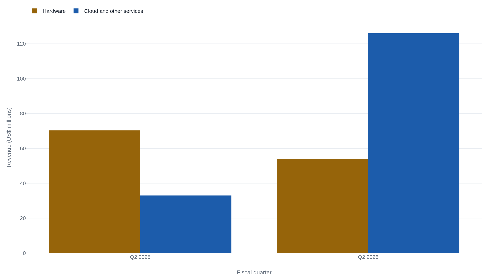
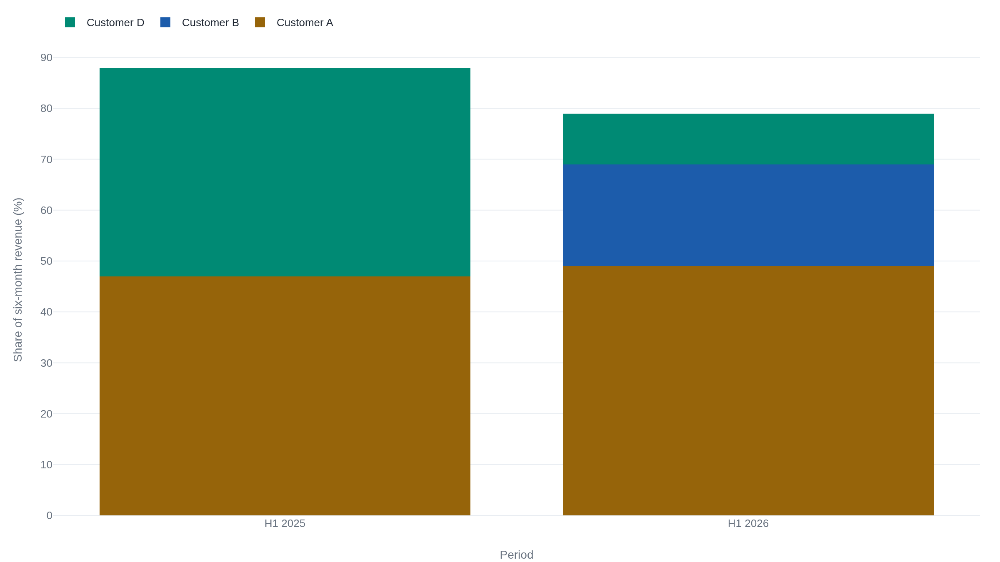
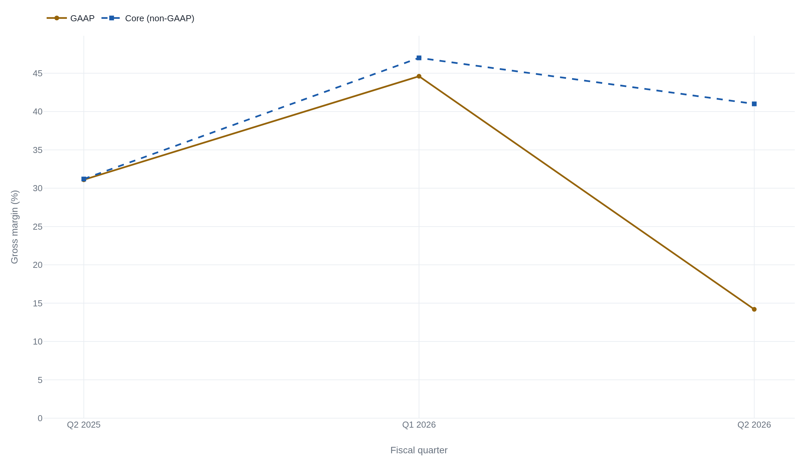

Cerebras's revenue concentration barely fell as its second-biggest customer changed
Cerebras's newest 10-Q shows the two related-party customers that once carried 88% of revenue falling to 59%, while a customer the filing never names took 32% of the second quarter's revenue on its own.
The customer table complicates a strong quarter
Cerebras Systems filed the 10-Q for its second full quarter as a public company on August 12, 2026, covering the three months ended June 30, 2026.1 It had priced its IPO at $185.00 a share on May 13, 2026 and begun trading on the Nasdaq Global Select Market the next day under the ticker CBRS.2 Three months in, this is the first Cerebras filing to show two consecutive quarters and a full year-over-year comparison at once.
Revenue for the quarter was $180.1 million, up 74% from $103.3 million a year earlier.1 That is strong growth. It is also lower than the $193.4 million Cerebras reported for the first quarter of 2026.
The more consequential numbers sit further down the filing, in the table that breaks revenue out by customer. The two related-party customers who together carried 88% of Cerebras's revenue in the first half of 2025 fell to a combined 59% of revenue in the first half of 2026. In the same window, a new customer took 32% of the second quarter's revenue on its own, the first time this customer was disclosed separately in the filing's revenue-concentration table.1 Add that customer back into the total, and the three largest disclosed relationships still account for 79% of the first half's revenue. That is nine points below where the two largest stood a year earlier.
Selling the hardware once, or renting the compute for years
Cerebras's 10-Q splits revenue into two categories: "Hardware" and "Cloud and other services."1 Hardware is what it sounds like: Cerebras builds and ships a physical system, the customer pays for it, and the revenue is recognized close to delivery. Cloud and other services is different. A customer buys ongoing access to Cerebras-run compute, metered and billed over time, closer to how a cloud provider or an inference API charges by usage than how a hardware vendor sells a box.
The two categories moved in opposite directions. Hardware revenue fell 23% year over year, from $70.3 million in the second quarter of 2025 to $54.1 million in the second quarter of 2026. Cloud and other services rose 281% over the same year, from $33.0 million to $126.0 million, and by the second quarter of 2026 it was Cerebras's larger business by more than two to one.1

The shift shows up quarter to quarter, too. In the first quarter of 2026, Hardware still led: $110.6 million against $82.8 million from Cloud and other services.3 Three months later the order had flipped, with Cloud and other services more than doubling while Hardware fell. Selling a system once and selling metered access to it are different businesses with different revenue timing. On the two quarters this record covers, Cerebras is shifting toward the second.
That shift compounds an existing pattern. Cerebras's own S-1 disclosed that its ten largest customers by year-to-date revenue increased their aggregate spend by approximately 80% within twelve months of their initial purchase.4 A customer that starts as a modest order and converts to a large, metered commitment inside a year is exactly the mechanism that produces a concentration event. Not many customers ever reach that scale, but the ones that do can come to dominate a small company's revenue quickly. The same pattern shows up in Cerebras's own growth curve: audited revenue rose from $24.6 million in 2022 to $510.0 million in 2025, 76% growth in the final year alone.4 How concentrated that growth was is harder to confirm directly. The S-1's audited financial-statement notes should carry a by-name customer breakdown, but the retrievable portions of the filing do not include it. A secondary summary of those notes puts G42 at 24% and MBZUAI at 62% of full-year 2025 revenue, 86% combined, a table the primary filing does not independently confirm in the portions available here.5
The rotation the filing won't name
Cerebras's revenue-concentration table names no companies. It lists "Customer A," "Customer B," "Customer C," and "Customer D," along with one qualifier: "Customer A and Customer D are considered related parties with respect to each other as defined by ASC 850, Related Party Disclosures."1 Related party, in SEC accounting language, means the two entities share ownership, control, or some other close affiliation that could make their transactions with Cerebras less than fully arm's-length. That is the kind of relationship a company must flag precisely because it isn't an ordinary customer relationship. The filing does not say who sits behind any of the four letters. Cerebras's own registration statement names its significant customers elsewhere, though. Its risk factors warn of "a reduction in demand from, or a material adverse development in our relationship with any of our significant customers, including OpenAI, G42, MBZUAI, and AWS."6 Those four names are the field the four letters most plausibly draw from.
How concentrated Customer A and Customer D have been is worth putting in context. In a since-withdrawn 2024 registration filing, a single customer, reported at the time as G42, accounted for 83% of Cerebras's revenue in 2023 and 87% in the first half of 2024.7 That filing predates the current, audited 2026 registration and shouldn't be blended with it. But it establishes that heavy reliance on one or two customers is not a new feature of Cerebras's business. It has been close to the normal state of the company for years.
The current 10-Q shows the same pattern reasserting itself with a different cast. Customer A and Customer D carried a combined 88% of revenue in the first half of 2025 (47% and 41%, respectively) and 59% in the first half of 2026 (49% and 10%).1

A third name, Customer B, is what replaced the difference. It does not appear at all in the three-month concentration table Cerebras filed for the first quarter of 2026: either it had not yet reached the reporting threshold, or its revenue had not yet started.3 By the second quarter it was Cerebras's second-largest disclosed customer, at 32% of the quarter's revenue and 20% of the first half's.1 Add Customer B back into the H1 2026 total, and the three largest named relationships come to 79% of revenue. That is nine points below the 88% that two customers alone carried a year earlier.
| Quarter | Customer A | Customer B | Customer C | Customer D |
|---|---|---|---|---|
| Q1 2025 | 24% | – | – | 64% |
| Q2 2025 | 70% | – | – | 18% |
| Q1 2026 | 63% | – | – | 11% |
| Q2 2026 | 34% | 32% | 10% | <10% |
Cerebras never states which named company sits behind any letter. The strongest link available is arithmetic. The 10-Q separately discloses that Cerebras recognized $56.8 million in the second quarter and $74.4 million over the first half under its Master Relationship Agreement with OpenAI, net of warrant amortization.1 As a share of total GAAP revenue, that is 31.5% of the quarter and 19.9% of the half. Both figures are almost exactly Customer B's disclosed 32% and 20%, not Customer A's 34% and 49%. If that match holds, OpenAI is Customer B, the new arrival, not the largest customer. Customer A and Customer D, the related-party pair, would then be more plausibly the historically linked G42 and MBZUAI relationship, consistent with the secondary FY2025 breakdown cited above.5 This is an inference from the numbers, not a statement the filing makes, and it should be read as such.
None of this supports reading 2026 as the year Cerebras's customer base broadly diversified. The pattern is not more customers sharing the revenue. It is the same small number of very large relationships, with membership changing faster than the total share they command.
14.2% or 41%: the same quarter, two gross margins
Cerebras's 10-Q reports one gross margin for the second quarter of 2026: 14.2%, down from 31.1% a year earlier.1 The earnings release Cerebras filed the same day reports a different number for the same quarter: a "core" gross margin of 41%, up from 31.2% a year earlier.8 Core is the company's own non-GAAP measure. It defines the adjustment precisely: core figures "(i) exclude non-cash stock-based compensation; (ii) exclude pass-through revenues and costs that are not part of our core technology and services offering; and (iii) add back non-cash amortization from customer warrants that is recorded as a reduction in revenues."8
CFO Bob Komin's earnings release framed the result plainly: "We significantly improved core gross and operating margins compared to a year ago."8 The GAAP filing tells a different story about the same quarter, one built from three disclosed, dollar-specific items.
Stock-based compensation totaled $376.8 million in the quarter, of which $273.6 million was a one-time cumulative catch-up, recognized because the IPO satisfied a vesting condition that had been outstanding since Cerebras adopted its equity plans.1 Customer warrants are rights to buy Cerebras stock that the company granted to large customers, principally OpenAI ($822.9 million) and G42 ($149.4 million). They are being amortized against revenue through October 2031, and in the second quarter alone that amortization reduced reported revenue by $44.3 million across all customer warrants.1 An $11.8 million charge for excess and obsolete inventory, tied to what the filing calls "the transition to the next generation of the Company's product offering," also ran through cost of revenue this quarter.1 None of these items is invented or unusual for a company one quarter removed from an IPO. None of them is likely to repeat at this size every quarter, either.

Cerebras's own Q1 2026 core gross margin had been 47%, and the company had guided the market to expect a decline to 36-38% for the second quarter. The 41% Cerebras actually reported beat that guidance.9 One secondary account attributes the anticipated compression to Cerebras's reliance on "expensive compute from G42" as a data-center vendor, ahead of finishing its own infrastructure.10 Nothing in the 10-Q supports that. The filing discusses G42 only as a customer and a warrant holder, never as a supplier of compute to Cerebras, and no vendor relationship of that kind appears anywhere in the document. That explanation should be treated as unconfirmed.
Whether Cerebras's margin is improving depends entirely on which of its own numbers is read. GAAP says it collapsed. Core says it recovered to a new high. Both are drawn from the same quarter, and neither is wrong on its own terms. GAAP includes real, disclosed costs that core is built to exclude, and core is transparent about excluding them.
What core cannot do is make the excluded items permanent. The stock-comp catch-up was explicitly one-time. The warrant amortization runs on a schedule fixed through October 2031, regardless of how the business performs.1 The next quarter's GAAP margin is the test of how much of the 41% survives without them.
What the $25.4 billion backlog won't break out
Remaining performance obligations, RPO, is the accounting term for revenue a company has already contracted to deliver but has not yet recognized: money attached to a signed agreement, waiting on delivery. Cerebras's RPO stood at $25.4 billion as of June 30, 2026.1 That is roughly 35 times its second-quarter revenue, annualized. The company expects to recognize approximately 22% of that balance within 24 months, another 43% in the following two years, and the remaining 35% after that.1
Most of the growth in that backlog traces to one agreement. OpenAI is "contractually committed to purchase" 750 megawatts of Cerebras's AI inference compute capacity under a Master Relationship Agreement, with an option for an additional 1.25 gigawatts (not a commitment, and not included in the RPO balance).1 The filing discloses this in power, not dollars. 750MW is the floor, the capacity OpenAI is contractually committed to buy. 1.25GW is the ceiling, if OpenAI exercises an option it is not obligated to.
How much of the $25.4 billion belongs to that one agreement, Cerebras does not say. The filing states only that "a significant amount" of RPO is "attributable to the Company's obligations pursuant to" the OpenAI agreement, with no dollar figure or percentage attached.1 That is the clearest limit in the record: the same filing that breaks quarterly revenue concentration down by customer does not break out the customer make-up of the single largest number in it at all.
The backlog barely grew between the two quarters on record. RPO was $25.0 billion as of March 31, 2026 and $25.4 billion three months later: a $400 million increase in the same quarter that added a new 750-megawatt commitment large enough to reshape the customer-concentration table.31 That implies a large amount of previously booked backlog was recognized as revenue in the same window, roughly offsetting the new commitment. The filings do not break that arithmetic out directly.
Cerebras's own framing of the number is more direct. The earnings release states a plan to "more than triple revenue in 2027," a target tied explicitly to the RPO balance.8 That is management's stated plan, not an independent forecast, and the same filing that discloses the backlog does not disclose enough about its composition for a reader to check the plan against it.
What would actually have to change
Cerebras's growth is real by any measure in this filing. Revenue is up 74% year over year, the cloud and inference business more than tripled, and the contracted backlog is large enough to fund years of expansion if it converts to revenue on schedule. None of that is in dispute. The question this filing can answer is narrower: has the concentration risk that has defined Cerebras since long before its IPO actually gotten smaller, or has it just changed shape?
On revenue concentration, the answer in this filing is: not much. The two related-party customers that carried 88% of revenue a year ago now carry 59%, but a new customer took most of the difference, and the three largest disclosed relationships still account for 79% of the half. On margin, the answer depends on which number Cerebras wants read. GAAP shows a business whose costs outran its growth this quarter. Core shows one improving on schedule. Both are accurate descriptions of the same disclosed items, and most of those items will not recur at this size.
On the backlog, $25.4 billion is a real, audited, contracted number. But the filing will not say how much of it sits with the one customer whose agreement grew fastest this quarter. That is the detail that would show whether the backlog is actually more diversified than the revenue it will eventually become.
The record supports a narrower claim than "Cerebras's growth is outrunning its risk": the risk has not shrunk, it has moved. Showing that it has genuinely diversified would take two things this 10-Q does not provide. One is a customer breakdown of the RPO balance. The other is a quarter in which the largest disclosed customer relationship does not simply have a different name on it. Until one of those shows up in a future filing, the concentration this record documents is the concentration Cerebras still has.1
Sources
- U.S. SEC · Cerebras Systems Form 10-Q, quarter ended June 30, 2026
- Cerebras Systems · Press release, IPO pricing
- U.S. SEC · Cerebras Systems Form 10-Q, quarter ended March 31, 2026
- U.S. SEC · Cerebras Systems Form S-1, filed April 2026
- Mostly Metrics · Cerebras IPO S-1 breakdown
- U.S. SEC · Cerebras Systems Form S-1/A (Amendment No. 1), filed May 4, 2026
- EE Times · Cerebras IPO paperwork sheds light on relationship with G42
- Cerebras Systems · Q2 2026 earnings release
- Cerebras Systems · Q1 2026 earnings release
- TradingKey · Cerebras (CBRS) Q2 earnings, gross margin analysis